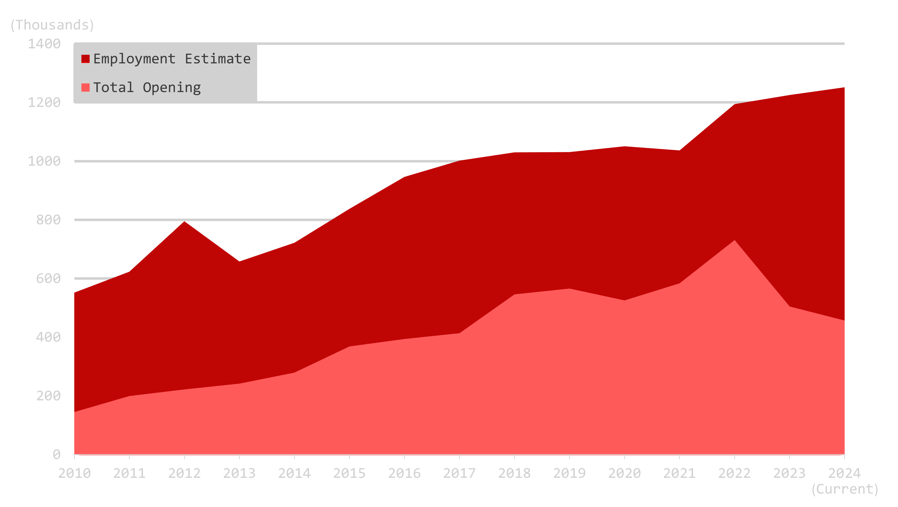
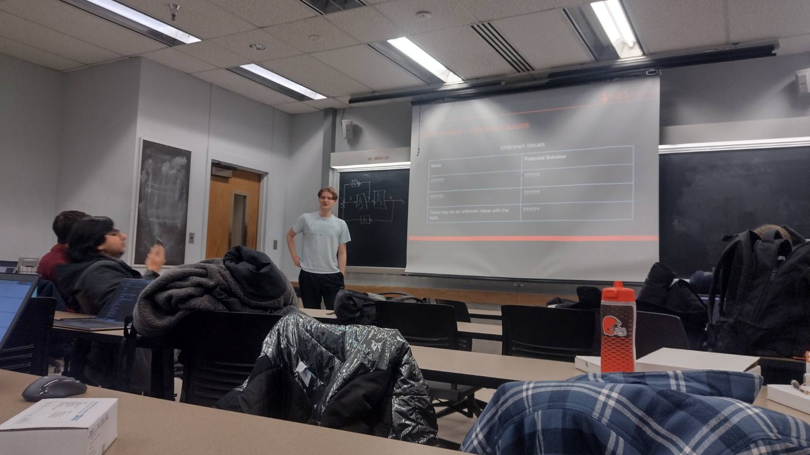
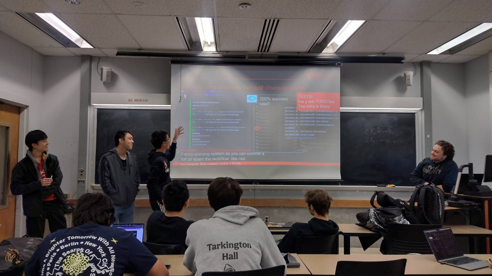
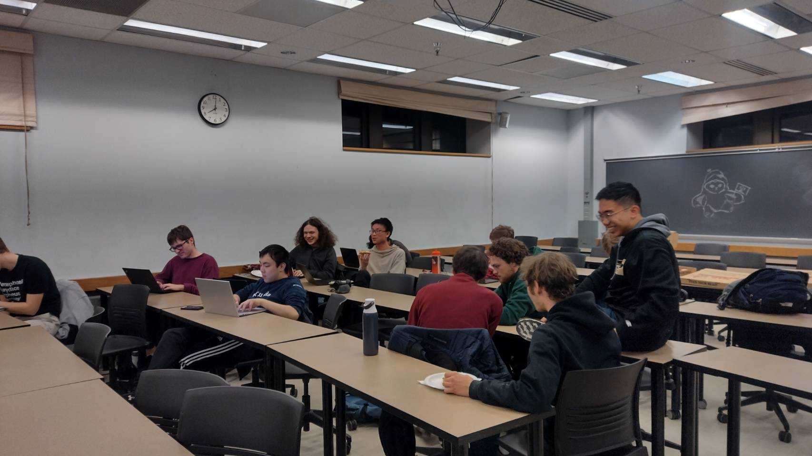
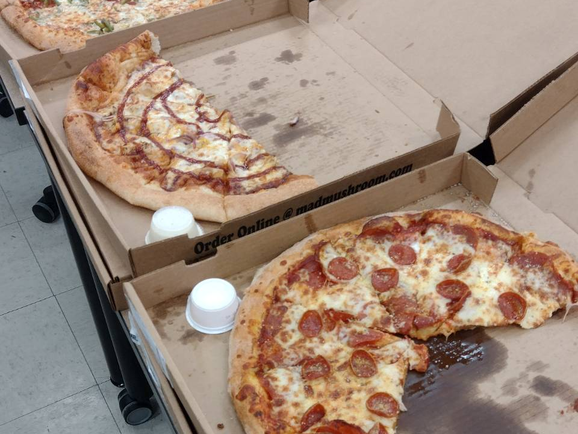
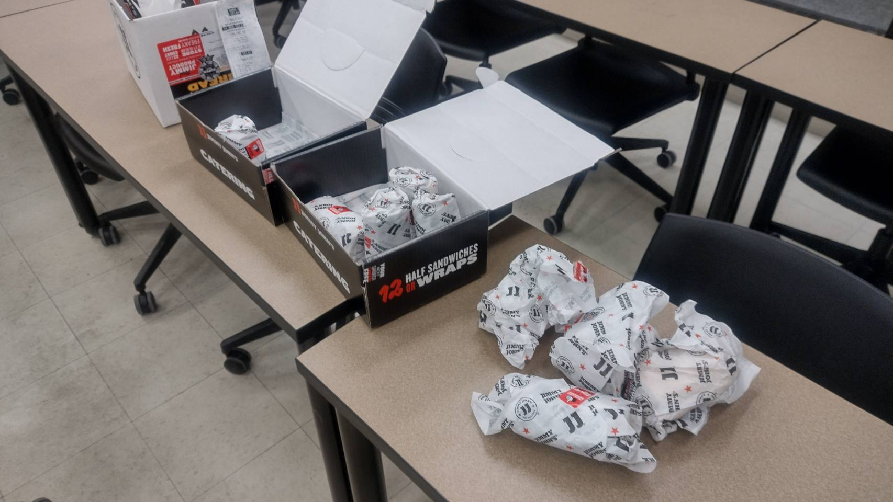
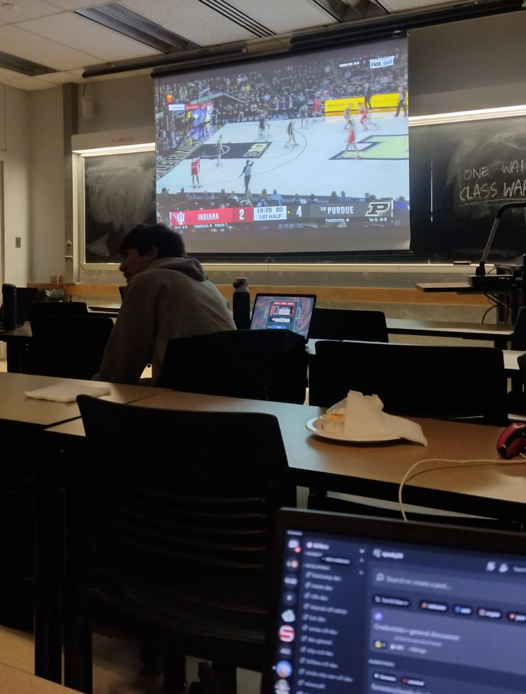
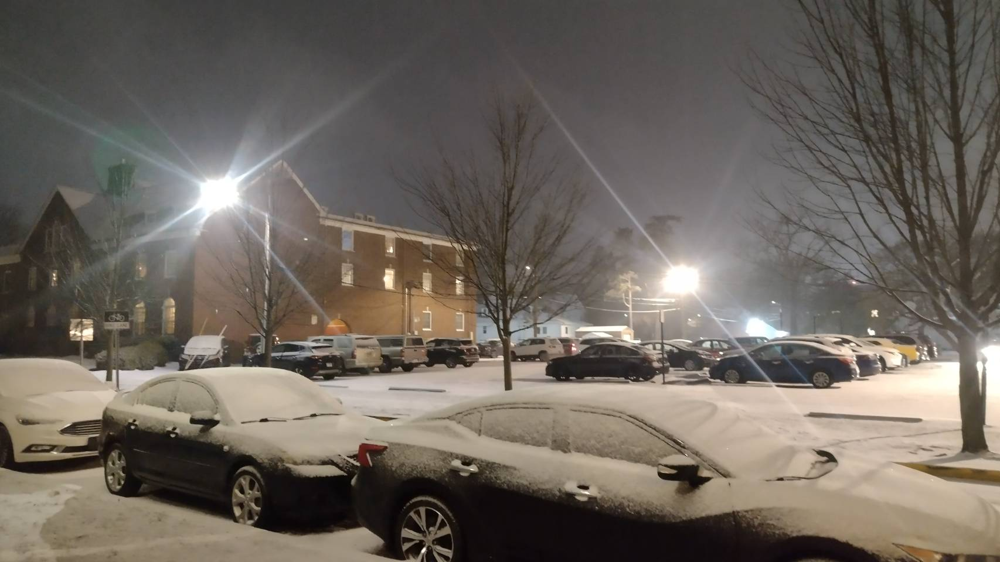

B01lers, formally the Purdue Capture the Flag team, is a long-standing club at Purdue. The club competes in cybersecurity competitions. Together, the club members hack their way throughout the world, landing top spots in major competitions globally. This year, the club continues its legacy, ranking in the top 100 teams worldwide and top 6 in the US.
CTF is a cybersecurity competition that lets participants sharpen their skills in security. From exploitation to digital forensics, the competition encompasses different fields in security, presenting the knowledge in bite-sized chunks. The participants can practice their craft by solving these challenges.

Figure 2. Number of cybersecurity professional and job openings in the US from 2010 to 2024
For the past 10 years, the demand for cybersecurity professionals has steadily increased. As shown in the graph, the number of professionals has doubled over the last ten years, creating 6 million positions in the United States alone. The number of job openings has also remained relatively stable. The data suggests that cybersecurity positions will provide great career stability.

Figure 3. Meeting in progress - Presentation
The boot camp is a long-running tradition of the B01lers club. During this month-long adventure, officers guide the participants through the challenging field of cybersecurity. Each meeting consists of a high-level overview of the topic, followed by small coding challenges designed to test the participants' learning progress. The members are expected to come in with no prior experience. Therefore, the boot camp is designed to train members with applicable knowledge to start their journey on this adventure. Every year, B01lers attracts hundreds of new members through this boot camp program.
During normal club meetings, people come together to share their knowledge and compete in CTFs together. Routinely, there are topic sessions for members to teach each other. After all, teaching others helps you learn better as well.

Figure 4. Meeting in progress - Presentation
One particular theme across the meetings is the unique culture and atmosphere among the members. Being hackers in spirit, the club members resonate together in nerdiness and quirks. The extensive meme culture is incorporated into the slideshows, giving every participant an unforgettable memory. In the photo above, you can see a great example of how this informality shines.

Figure 5. Meeting in progress - Discussion
Aside from topic sessions, the club's main activity is to compete in CTFs, as the name suggests. The members spread throughout the room, finding people to collaborate on challenges. As the types of challenges change, people bundle up into different groups that have different expertise. This further enhances communication among the members.
More often than not, CTF will propose challenges that are novel or distinct from school course work. This requires us to learn new techniques on the fly, applying our general knowledge in cybersecurity in a new form to solve those challenges. Therefore, the participants can practice learning new concepts, and how to apply those concepts in a different setting. This improves people's problem solving skills, which is highly valuable both in the job market and in real life.

Figure 6. Serving Pizza during club meetings
 Figure 7. Serving sandwiches during club meetings
The club serves dinner during meetings, making sure that members are well-fed to focus on the competitions. Typically, the club orders pizza, as it's easier to share. Occasionally, there will be different types of food, like sandwiches.

Figure 8. Watching Purdue v.s. IU games together
Aside from competitions, B01lers forms a welcoming community. The members meet together and enjoy various activities together. During the Purdue vs. IU basketball game, we gather together to watch the game live. With various activities spread throughout the year, people find different ways to engage with the community.

Figure 9. Snowy night sky after the meeting
After a long day of classes and a joyful club session, only the snowy night sky greets everyone. With their newly learned knowledge, members leave the club room, ready to tackle the next challenge.